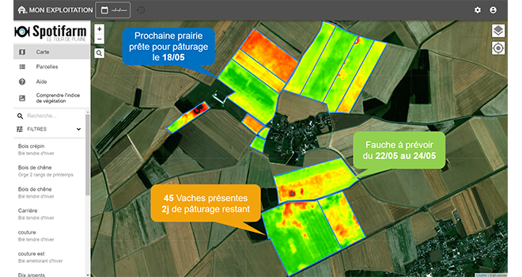

18 mars 2021
« Initialement, l’application Spotifarm propose des images satellites pour effectuer des tours de plaine "vu du ciel". Depuis février 2021, les agriculteurs ont désormais la possibilité de moduler les doses d’intrants en fonction du niveau de végétation », déclare Alexandre Diaz, directeur marketing et communication chez Spotifarm.
Avec cette application, l'agriculteur a ainsi la possibilité de « créer ses propres cartes d'application en toute autonomie à partir des images satellites et de moduler les doses d'intrants sur les différentes zones de sa parcelle, en fonction des données obtenues par l'indice de végétation. Il peut choisir la date du cliché qui lui convient pour établir ces cartes. Toutes ces données sont directement reportées sur la console du tracteur ou de l’épandeur avec une clé USB ». « La modulation de dose sur Spotifarm va ainsi réduire fortement les risques de surdosages à certains endroits et de sous-dosage à d’autres, source de pertes de rendement. Ainsi l’agriculteur optimise ses coûts d’intrants et génère une meilleure rentabilité économique », indiquent les équipes Spotifarm.
Article original : Ici